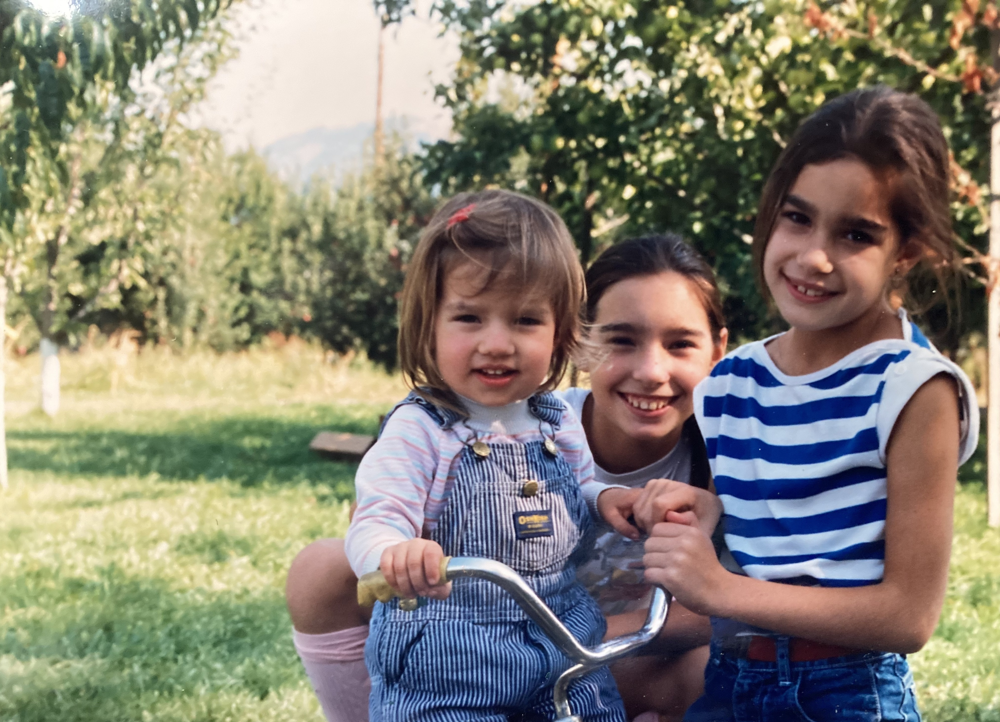

About Keir
Welcome
My name is Keir, and I am running for a position on the Hood River Valley Parks and Recreation District Board of Directors.
Hood River is a remarkable and beautiful place, and we need to wisely manage and protect each unique facet of it: forests, rivers, agricultural land and community character. We need to design and build parks that later generations can be proud of; parks that reflect and honor our community and the land we inhabit. We need to build facilities that promote wellness and foster inclusive community. An inclusive community needs a parks board that consists of people from different backgrounds, with different strengths and ideas; working people, as well as administrators and professionals.
I am a long time resident of West Hood River. I grew up in the Valley during the 1980's and 1990's. Back when Hood River was a small town.
After college and some years away, I moved back to the home I grew up in and to the trees my mom planted.
I work as a union electrician with IBEW Local 48, but my first love is nature and wild places. I live with my two cats, Semi and Ridealong, and enjoy diy projects, reading, hiking, and paddling/rowing/sailing local waterways in my free time.
Please look over my website and some of the ideas I have to help move Hood River Valley Parks and Recreation District forward.
I will be adding content over the next month, so check back!
Thank you for considering me for the Hood River Valley Parks and Recreation District Board.
If you support my ideas and positions, please consider helping to spread the word and share this website with your friends and family.
Keir Bryerton